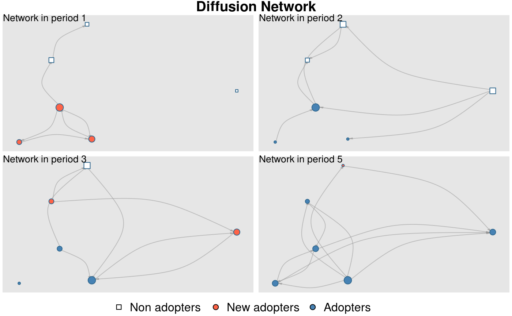

Creates a colored network plot showing the structure of the graph through time (one network plot for each time period) and the set of adopter and non-adopters in the network.
plot_diffnet(...) # S3 method for diffnet plot_diffnet(graph, ...) # S3 method for default plot_diffnet( graph, cumadopt, slices = NULL, vertex.color = c("white", "tomato", "steelblue"), vertex.shape = c("square", "circle", "circle"), vertex.size = "degree", mfrow.par = NULL, main = c("Network in period %s", "Diffusion Network"), legend.args = list(), minmax.relative.size = getOption("diffnet.minmax.relative.size", c(0.01, 0.04)), background = NULL, ... )
| ... | Further arguments to be passed to |
|---|---|
| graph | A dynamic graph (see |
| cumadopt | \(n\times T\) matrix. |
| slices | Integer vector. Indicates what slices to plot. By default all are plotted. |
| vertex.color | A character vector of size 3 with colors names. |
| vertex.shape | A character vector of size 3 with shape names. |
| vertex.size | Either a numeric scalar or vector of size \(n\), or any of the following values: "indegree", "degree", or "outdegree" (see details). |
| mfrow.par | Vector of size 2 with number of rows and columns to be passed to |
| main | Character scalar. A title template to be passed to |
| legend.args | List of arguments to be passed to |
| minmax.relative.size | Passed to |
| background | Either a function to be called before plotting each slice, a color
to specify the backgroupd color, or |
Calculated coordinates for the grouped graph (invisible).
Plotting is done via the function plot.igraph.
When vertex.size is either of "degree", "indegree", or
"outdegree", vertex.size will be replace with dgr(.,cmode = )
so that the vertex size reflects the desired degree.
The argument minmax.relative.size is passed to rescale_vertex_igraph
which adjusts vertex.size so that the largest and smallest vertices
have a relative size of minmax.relative.size[2] and
minmax.relative.size[1] respectively with respect to the x-axis.
Plotting is done via the function plot.igraph.
In order to center the attention on the diffusion process itself, the positions of each vertex are computed only once by aggregating the networks through time, this is, instead of computing the layout for each time \(t\), the function creates a new graph accumulating links through time.
The mfrow.par sets how to arrange the plots on the device. If \(T=5\)
and mfrow.par=c(2,3), the first three networks will be in the top
of the device and the last two in the bottom.
The argument vertex.color contains the colors of non-adopters, new-adopters,
and adopters respectively. The new adopters (default color "tomato") have a different
color that the adopters when the graph is at their time of adoption, hence,
when the graph been plotted is in \(t=2\) and \(toa=2\) the vertex will
be plotted in red.
legend.args has the following default parameter:
x | "bottom" |
legend | c("Non adopters", "New adopters","Adopters") |
pch | sapply(vertex.shape, switch, circle = 21, square = 22, 21) |
bty | "n" |
horiz | TRUE |
Other visualizations:
dgr(),
diffusionMap(),
drawColorKey(),
grid_distribution(),
hazard_rate(),
plot_adopters(),
plot_diffnet2(),
plot_infectsuscep(),
plot_threshold(),
rescale_vertex_igraph()
# Generating a random graph set.seed(1234) n <- 6 nper <- 5 graph <- rgraph_er(n,nper, p=.3, undirected = FALSE) toa <- sample(2000:(2000+nper-1), n, TRUE) adopt <- toa_mat(toa) plot_diffnet(graph, adopt$cumadopt)